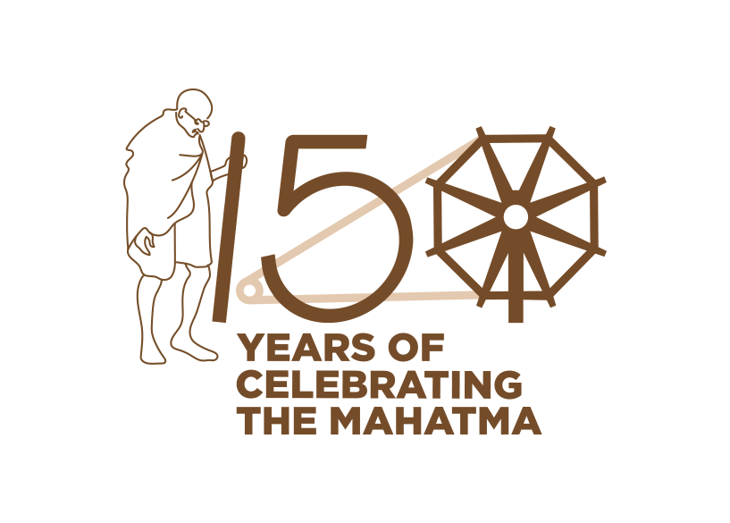

Culture plays an important role in the development agenda of any nation. It represents a set of shared attitudes, values, goals and practices. Culture and creativity manifest themselves in almost all economic, social and other activities. A country as diverse as India is symbolized by the plurality of its culture. The mandate of the Ministry of Culture revolves around the functions like preservation and conservation of our cultural heritage and promotion of all forms of art and culture, both tangible and intangible. The Ministry’s task is to develop and sustain ways and means through which the creative and aesthetic sensibilities of the people remain active and dynamic. The functional spectrum of this Ministry is wide, ranging from generating cultural awareness at grassroots level to promoting cultural exchanges at international level. In order to achieve these objectives, the Ministry undertakes various activities that flow from subjects allocated under the Govt. of India’s Allocation of Business Rules.